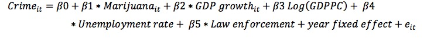
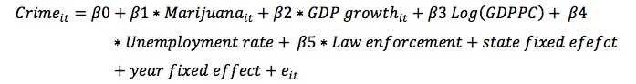

Project Evaluation

Based on the above analysis, I can use marijuana dummy to identify the impact of marijuana legalization on crime rate. For model I, I only control stat fixed effects.

In model II, I use state dummies and year dummies to control state fixed effect and year fixed effect, respectively.

The result can be shown in table 2 and table 3. Table 2 is the results based on violent crime rate, while table 3 is the results based on property crime rate.